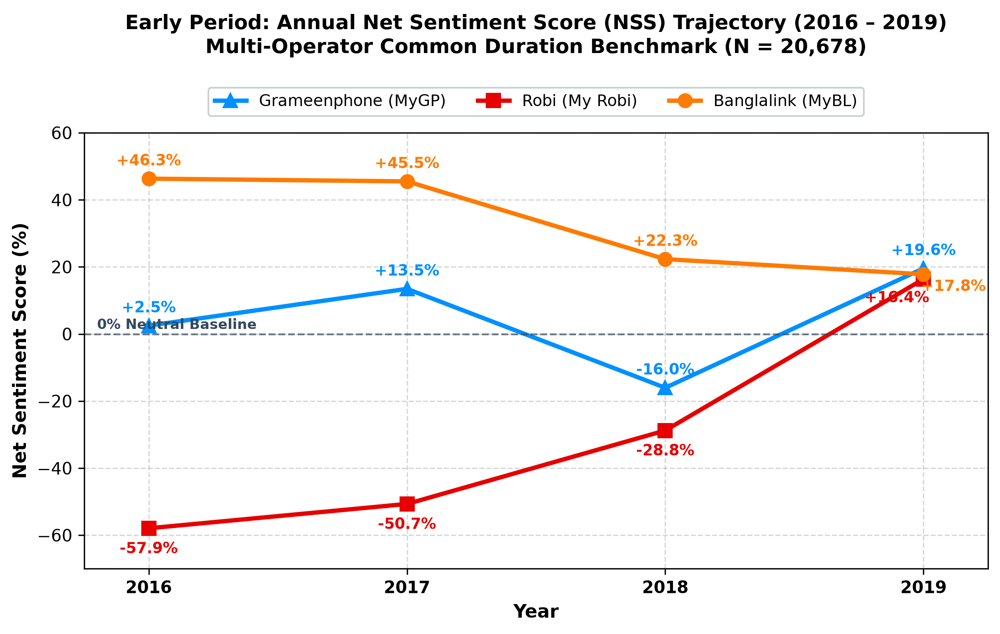

Telecom Voice-of-Customer (VoC) Intelligence Engine
An enterprise end-to-end NLP and Business Intelligence pipeline analyzing customer sentiment, operational complaints, and product trajectories across Bangladesh’s premier telecommunications operators: Grameenphone Ltd. (operating the MyGP platform), Robi Axiata Limited (operating the My Robi platform), and Banglalink Digital Communications Limited (operating the MyBL platform).
1. 3,716-Day Common Duration Window (July 28, 2016 – September 30, 2026 | N = 655,670): To eliminate temporal selection bias and guarantee strict statistical equity (ensuring no operator has missing historical windows in comparative analytics), all published benchmarks, comparative scorecards, trendlines, and category distributions strictly evaluate the continuous 10-year period where all three operators coexist simultaneously. The full multi-year corpus (N = 661,160, Oct 2014 – Oct 2026) is preserved in storage for extended longitudinal modeling.
2. Central Limit Theorem (CLT) Normality Rule (N ≥ 30): In longitudinal time-series analytics, we enforce the classical Central Limit Theorem standard (N ≥ 30) for asymptotic sample normality. Sparse early-adoption months (N < 30, such as July 2016 where Grameenphone had 3 reviews and Robi had 0) are excluded from monthly trendlines to eliminate small-sample distortion, where a single random review would artificially swing net sentiment by ±30% to ±100%.
Exact continuous 3,716-day window (Jul 28, 2016 – Sep 30, 2026) ensuring zero temporal selection bias.
End-to-end 12-layer fine-tuning (0.8598 Macro-F1); Soft-Voting Ensemble delivers 87.4% on Category at >80× speedup.
Complete multi-year longitudinal repository (347 MB) from Oct 2014 through Oct 2026 across all three operator platforms.
Substantial inter-annotator agreement across operational complaint domains on blind zero-leakage human validation.
Common Duration Benchmark (July 28, 2016 – September 30, 2026 | 3,716 Days)
| # | Operator Platform | Total Reviews | Positive % | Neutral % | Negative % | Net Sentiment (NSS) |
|---|---|---|---|---|---|---|
| 1 | Grameenphone (MyGP) | 320,143 | 77.0% | 10.9% | 12.1% | +64.9% (Scale Leader) |
| 2 | Robi (My Robi) | 198,378 | 77.9% | 10.2% | 12.0% | +65.9% (NSS Leader) |
| 3 | Banglalink (MyBL) | 137,149 | 70.4% | 12.3% | 17.3% | +53.1% (Agile Growth • 2026 Peak +81.9%) |
| -- | Industry Benchmark (Pooled) | 655,670 | 75.9% | 10.9% | 13.2% | +62.7% |
Market Sentiment Benchmarks & Departmental Analytics
Net Sentiment Score (NSS) Comparison
Figure 1.1
NSS Formula: % Positive − % Negative. Evaluated across the 3,716-day common window, Grameenphone (+64.9% NSS across 320.1k reviews) anchors market scale, while Robi (+65.9% NSS across 198.4k reviews) leads net consumer sentiment. Banglalink (+53.1% NSS across 137.1k reviews) exhibits rapid agility, culminating in a market-leading +81.9% NSS in 2026. Industry benchmark stands at +62.7%.
Sentiment Share Distribution by Operator
Figure 1.2
Class Proportions: Grameenphone records 77.0% positive, 10.9% neutral, and 12.1% negative feedback; Robi achieves 77.9% positive, 10.2% neutral, and 12.0% negative; Banglalink registers 70.4% positive, 12.3% neutral, and 17.3% negative feedback across the 10-year common duration.
Multi-Year Net Sentiment Trajectory (2016 – 2026)
Tracking Continuous Annual Net Sentiment Across 3,716 Shared Days (Jul 28, 2016 – Sep 30, 2026)

Empirical Trajectory Insight: Full unclipped vertical dynamic range capturing consumer sentiment from the acute 2018 4G deployment dip (Grameenphone −16.0%, Robi −28.8%) through the 2020–2022 digital adoption surge, up to Banglalink's peak +81.9% performance in 2026.

Scaled `[-35%, +55%]` highlighting biometric SIM registration frictions and the 2018 4G rollout crisis.

Scaled `[+30%, +92%]` tracking super-app ecosystems, VAS controversies, and the 2026 Banglalink resurgence.
Continuous Monthly Net Sentiment Dynamics (123 Months · Jul 2016 – Sep 2026)
Statistical Normality Filter Enforced: Monthly Trajectory Plotted with Central Limit Theorem Floor (N ≥ 30)

CLT Sampling Note: In accordance with the classical Central Limit Theorem guideline for asymptotic normality, monthly NSS values are strictly plotted only for operator months with N ≥ 30 verified customer reviews. Sparse early-adoption months (N < 30) are omitted from the trajectory lines to eliminate small-sample noise spikes.

Captures teething volatility and month-by-month recovery across initial digital app rollouts.

High-volume super-app stability tracking seasonal festival recharges, regulatory shifts, and app release cycles.
Longitudinal Sentiment Stability & Volatility Metrics (2020 – 2026)
Evaluating Sequential Month-over-Month Turbulence across 81 High-Volume Continuous Months

| Operator Platform | Mean NSS (2020–2026) | MoM Volatility (RMSSD) | Stability Index (SSI / 100) | Interquartile Range (IQR) | Stability Diagnosis |
|---|---|---|---|---|---|
| Robi (My Robi) | +64.16% | 5.61 pts | 94.39 / 100 | 18.08 pts | Highest Stability: Most consistent month-to-month consumer experience across all 81 months. |
| Grameenphone (MyGP) | +61.11% | 6.28 pts | 93.72 / 100 | 14.07 pts | High Stability: Tightest core distribution band (Q1 = 54.2%, Q3 = 68.3%). |
| Banglalink (MyBL) | +50.06% | 13.61 pts | 86.39 / 100 | 18.25 pts | High Volatility: Over 2.4× more volatile month-over-month than Robi, driven by periodic app release swings. |
Actionable Operational Complaint Rates
Figure 1.6
Negative Filter Applied: Evaluated strictly on negative reviews (% of total operator volume). Banglalink exhibits elevated App Login & Technical Bug friction (7.25%) and Network Latency complaints (2.72%). Grameenphone leads negative feedback on Offers & Data Packs (2.99%) and Billing Deductions (1.03%).
Sentiment Composition per Operational Category
Figure 1.7
Dissatisfaction Concentration: Billing & Airtime Deductions is a pure pain point (>90% negative sentiment across all three operators). App Login & Technical Bugs is also heavily negative (~88%). Conversely, Offers & Data Packs is a balanced mixed topic (50–57% negative, with over 25% positive commendations for discounts).
Year-by-Year Strategic Inflection Points (2016 – 2026)
Tracking customer sentiment across the shared 3,716-day window (N = 655,670) captures the empirical evolution of Bangladesh's mobile telecom apps:
| Year | Grameenphone (MyGP) | Robi (My Robi) | Banglalink (MyBL) | Empirical Data-Backed Market Trajectory |
|---|---|---|---|---|
| 2016 (Jul–Dec) | +2.5% (441) | -57.9% (126) | +46.3% (762) | Early app deployment; Robi experienced severe negative sentiment (72.2% negative), while Banglalink launched with 63.8% positive feedback. |
| 2017 | +13.5% (587) | -50.7% (367) | +45.5% (2,518) | Banglalink volume grew 3.3× at stable +45.5% NSS; Robi remained underwater at 67.8% negative reviews. |
| 2018 | -16.0% (605) | -28.8% (1,418) | +22.3% (3,041) | Industry-wide 4G Rollout Dip: GP negative reviews rose to 47.9% (-16.0% NSS) and Robi recorded 53.6% negative reviews during network upgrades. |
| 2019 | +19.6% (2,392) | +16.4% (4,186) | +17.8% (4,235) | Sentiment rebounded across all operators; Robi turned positive (+16.4% NSS) as positive reviews reached 51.5%. |
| 2020 | +45.7% (27,600) | +63.6% (32,333) | +38.3% (17,538) | Pandemic Digital Surge: Review volume expanded +616% YoY (77.5k total reviews); Robi surged to +63.6% NSS on 76.5% positive reviews. |
| 2021 | +61.0% (40,535) | +63.8% (30,296) | +46.6% (25,471) | Upward trajectory solidified across all operators; GP NSS rose +15.3 points to +61.0%. |
| 2022 | +64.2% (45,702) | +68.4% (34,418) | +55.5% (21,442) | Sustained high sentiment; GP and Robi maintained positive shares above 76%, Banglalink rose to +55.5% NSS. |
| 2023 | +69.8% (60,609) | +48.7% (16,784) | +40.1% (14,761) | Divergence Year: GP expanded to 60.6k reviews at +69.8% NSS; Robi dipped to +48.7% due to app authentication bugs, and BL dipped to +40.1%. |
| 2024 | +70.6% (75,059) | +66.0% (16,804) | +57.2% (15,333) | GP logged peak volume (>75k reviews) at +70.6% NSS; Robi rebounded +17.3 points to +66.0% following client patches. |
| 2025 | +70.3% (54,262) | +78.6% (42,743) | +66.4% (10,238) | Robi achieved a market-leading +78.6% NSS (negative reviews dropped to 6.4%); Banglalink improved to +66.4%. |
| 2026 (Jan–Sep) | +56.8% (12,351) | +76.2% (18,903) | +81.9% (21,810) | Banglalink Market Surge: Banglalink recorded highest 2026 NSS at +81.9% (86.8% positive); GP declined to +56.8% due to data pack price friction. |
Significant Shock Detection & Additive Category Attribution
To transition from passive metric monitoring to root-cause diagnosis, our pipeline deploys an automated Significant Shock Attribution Engine:
Across 81 high-volume months, median monthly shift is 2.57 – 2.84 points. A ±10-point swing corresponds to the 90th–95th percentile, isolating high-impact, actionable operational anomalies occurring in <10% of months.
Because Net Sentiment Score is linearly additive across categories, the month-over-month shift decomposes additively without approximation:
Δ NSS = ∑ Δ Contribution_c = ∑ [ (Pos_c - Neg_c) / N_Total ] × 100
| Operator | Transition Period | NSS Shift (Δ) | Primary Operational Driver | Driver Impact | Empirical Root-Cause Breakdown |
|---|---|---|---|---|---|
| Grameenphone | 2020-03 → 2020-04 | +31.2 pts | App Login & Technical Bugs | +5.49 pts | Rapid drop in login bug grievances (+5.49 pts) and increased data pack praise (+3.54 pts). |
| Grameenphone | 2021-04 → 2021-05 | -13.8 pts | App Login & Technical Bugs | -2.29 pts | Joint increase in login bug complaints (-2.29 pts) and network latency friction (-2.19 pts). |
| Grameenphone | 2021-08 → 2021-09 | +13.6 pts | App Login & Technical Bugs | +5.08 pts | Sharp decrease in authentication and session crash reports (+5.08 pts). |
| Grameenphone | 2025-08 → 2025-09 | -18.5 pts | Offers & Data Packs | -2.68 pts | Surge in data pricing/validity dissatisfaction (-2.68 pts) alongside login complaints (-1.25 pts). |
| Robi | 2022-12 → 2023-01 | -16.6 pts | App Login & Technical Bugs | -7.40 pts | Severe login session failure; App Login complaints accounted for nearly half the total decline. |
| Robi | 2023-01 → 2023-02 | +10.7 pts | App Login & Technical Bugs | +4.64 pts | Recovery following client stability patch, restoring +4.64 pts in login sentiment. |
| Banglalink | 2021-04 → 2021-05 | -16.4 pts | Network Speed & 4G Latency | -4.90 pts | High surge in network speed and coverage complaints (-4.90 pts). |
| Banglalink | 2024-03 → 2024-04 | -11.2 pts | App Login & Technical Bugs | -8.74 pts | Acute login session and OTP delivery failure (-8.74 pts impact). |
| Banglalink | 2024-04 → 2024-05 | +32.8 pts | App Login & Technical Bugs | +13.73 pts | App release resolved authentication crashes, driving a +13.73 pts recovery in login sentiment alone. |
Empirical Multi-Paradigm Benchmark Suite
Models evaluated via 5-Fold Stratified Cross-Validation on 4,500 curated seed reviews and validated against a zero-leakage blind human gold standard:
1. Sentiment Polarity (3-Class)
BanglaBERT Leader
| Model | Accuracy | Macro-F1 | Latency |
|---|---|---|---|
| 🥇 BUET BanglaBERT | 91.60% | 0.8598 | GPU Batched |
| 🥈 Soft-Voting Ensemble | 87.47% | 0.7684 | >80× (Sub-ms CPU) |
| 🥉 Multilingual MiniLM | 82.33% | 0.7475 | ~10× (Dense CPU) |
| 4. Hybrid BiLSTM + Attn | 81.50% | 0.7180 | GPU Batched |
2. Operational Category (5-Class)
Ensemble Leader
| Model | Accuracy | Macro-F1 | Latency |
|---|---|---|---|
| 🥇 Soft-Voting Ensemble | 87.44% | 0.7845 | >80× (Sub-ms CPU) |
| 🥈 BUET BanglaBERT | 85.27% | 0.7624 | GPU Batched |
| 🥉 Multilingual MiniLM | 81.15% | 0.7247 | ~10× (Dense CPU) |
| 4. Hybrid BiLSTM + Attn | 80.84% | 0.7106 | GPU Batched |
Zero-Leakage Human Gold Standard & Inter-Annotator Agreement
Evaluated across an overlapping stratified cohort (N = 200 pairs across all three operators) evaluated by two independent human reviewers:
- Operational Category: 95.41% Raw Agreement | κ = 0.7694 (Substantial)
- Sentiment Polarity: 91.00% Raw Agreement | κ = 0.5762 (Moderate)
On consensus reviews (where both independent human annotators agreed 100%), the production Soft-Voting Ensemble reaches:
- Operational Category: 94.12% Agreement on human consensus
- Sentiment Polarity: 87.91% Agreement on human consensus
Operator Strategic Roadmaps & Competitive Levers
Grameenphone (MyGP)
Scale AnchorStrategic Lever: Deploy dynamic micro-packs with rollover validity and a zero-click "Where Did My Balance Go?" transaction timeline to curb airtime deduction grievances.
Robi (My Robi)
NSS LeaderStrategic Lever: Overhaul biometric login token caching to resolve recurring session timeout crashes, and simplify automated VAS cancellation toggles.
Banglalink (MyBL)
Agile Value LeaderStrategic Lever: Capitalize on market-leading +81.9% sentiment to transition promotional micro-rechargers into recurring monthly commitments while optimizing 4G edge caching.
The complete automated scraping harness, bilingual preprocessing pipeline, model training suites (BanglaBERT, RoBERTa, FastText, and voting ensembles), statistical shock attribution calculations, and Power BI semantic data models are open-sourced for research reproduction and auditing.
git clone https://github.com/rh61632/telecom-Voice-of-Customer_intelligence.git